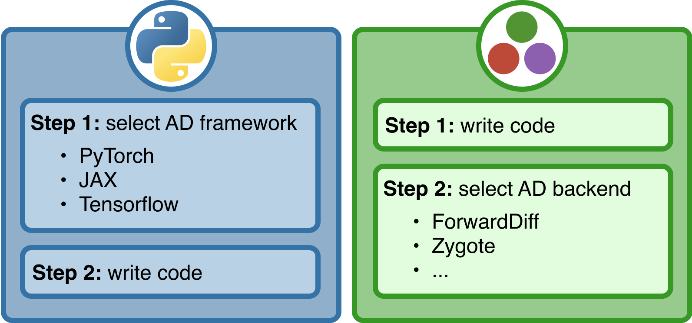

![]()
using DifferentiationInterface
import ForwardDiff, Enzyme, Zygote
f(x) = sum(abs2, x)
x = [1.0, 2.0, 3.0, 4.0]Gradients for everyone
A quick guide to autodiff in Julia
2024-07-11
Follow along
Slides available on GitHub:

Introduction
Motivation
- What is a derivative?
- Why do we care?
Differentiable programming
- A function is not just math
- Blocks of code are functions too
Three types of AD users
- Backend developers want to create new AD systems
- Package developers want to write differentiable functions
- Package users want to differentiate through functions
Python vs. Julia
Python vs. Julia

How AD works
A multifaceted concept
See Blondel and Roulet (2024) for a deep dive:
Numeric differentiation
Symbolic differentiation
Algorithmic differentiation
Let’s look at a function \(h(x)=g(f(x))\) composed from two differentiable functions \(f: \mathbb{R}^n \rightarrow \mathbb{R}^m\) and \(g: \mathbb{R}^m \rightarrow \mathbb{R}^p\) \[ h = g \circ f \quad . \]
The Jacobian of \(h\) can be obtained from the Jacobians of \(g\) and \(f\) using the chain rule:
\[ J_h\big|_x = J_{g}\big|_{f(x)} \cdot J_{f}\big|_{x} \]
For functions with “deeper” compositional structure, we need to compute the products of many Jacobians.
- If implemented naively, full Jacobians require a lot of memory
- Instead, let’s do this matrix-free using JVPs and VJPs!
Jacobian-vector products
Also called JVPs, pushforwards or forward rules
Multiplying Jacobian with \(i\)-th column basis vector \(e_i\) computes \(i\)-th column of Jacobian \[ \begin{equation} J_f\big|_x \cdot e_i = \begin{bmatrix} \dfrac{\partial f_1}{\partial x_1}\Bigg|_x & \cdots & \dfrac{\partial f_1}{\partial x_n}\Bigg|_x\\ \vdots & \ddots & \vdots\\ \dfrac{\partial f_m}{\partial x_1}\Bigg|_x & \cdots & \dfrac{\partial f_m}{\partial x_n}\Bigg|_x \end{bmatrix} \cdot e_i = \begin{bmatrix} \dfrac{\partial f_1}{\partial x_i}\Bigg|_x \\ \vdots \\ \dfrac{\partial f_m}{\partial x_i}\Bigg|_x \\ \end{bmatrix} =: \mathcal{D}f_x(e_i) \end{equation} \]
For \(f: \mathbb{R}^n \rightarrow \mathbb{R}^m\), computing the full \(m \times n\) Jacobian requires computing \(n\,\) JVPs:
one for each column, as many as the input dimensionality of \(f\).
Vector-Jacobian products
Also called VJPs, pullbacks or reverse rules
Multiplying \(i\)-th row basis vector \(e_i^T\) with Jacobian computes \(i\)-th row of Jacobian \[ \begin{align} e_i^T \cdot J_f\big|_x &= e_i^T \cdot \begin{bmatrix} \dfrac{\partial f_1}{\partial x_1}\Bigg|_x & \cdots & \dfrac{\partial f_1}{\partial x_n}\Bigg|_x\\ \vdots & \ddots & \vdots\\ \dfrac{\partial f_m}{\partial x_1}\Bigg|_x & \cdots & \dfrac{\partial f_m}{\partial x_n}\Bigg|_x \end{bmatrix} \\[0.5em] &= \hspace{1.35em}\begin{bmatrix} \dfrac{\partial f_i}{\partial x_1}\Bigg|_x & \cdots & \dfrac{\partial f_i}{\partial x_n}\Bigg|_x \end{bmatrix} =: \mathcal{D}^{*}f_x(e_i) \end{align} \]
Computing the full \(m \times n\) Jacobian requires computing \(m\,\) VJPs: one for each row, as many as the output dimensionality of \(f\).
Forward mode – Theory
Assuming a function \(f(x) = f^N(\ldots f^2(f^1(x)))\) with intermediate activations \[ h_1 = f^1(x) \,,\quad h_2 = f^2(f^1(x)) \,,\quad h_k = f^{k}(h_{k-1}) \,, \]
we can compute JVPs of \(f\) by forward-accumulating JVPs of \(f^i\): \[ % parentheses for emphasis J_f\big|_x \cdot v = J_{f^{N }}\big|_{h_{N-1}} \cdot \Big( \ldots \cdot \Big( J_{f^{2 }}\big|_{h_{1 }} \cdot \Big( J_{f^{1 }}\big|_{x} \cdot v \Big)\Big) \Big) \]
or in terms of pushforwards: \[ \mathcal{D}f_x(v) = \big( \mathcal{D}f^{N}_{h_{N-1}} \circ \ldots \circ \mathcal{D}f^2_{h_1} \circ \mathcal{D}f^1_{x} \big)(v) \]
Forward mode – Implementation
Reverse mode – Theory
we can compute VJPs of \(f\) by reverse-accumulating VJPs of \(f^i\): \[ % parentheses for emphasis w^T \cdot J_f\big|_x = \Big(\Big(\Big( w^T \cdot J_{f^{N }}\big|_{h_{N-1}} \Big) \cdot J_{f^{N-1}}\big|_{h_{N-2}} \Big) \cdot \ldots \Big) \cdot J_{f^{1 }}\big|_x \]
or in terms of pullbacks: \[ \mathcal{D}^{*}f_x(w) = \big( \mathcal{D}^{*}f^{1 }_x \circ \ldots \circ \mathcal{D}^{*}f^{N-1}_{h_{N-2}} \circ \mathcal{D}^{*}f^{N }_{h_{N-1}} \big) (w) \]
Reverse mode – Implementation
Using AD
Why so many backends?
- Conflicting paradigms:
- numeric vs. symbolic vs. algorithmic
- source-to-source vs. operator overloading
- Julia AST vs. Julia IR vs. LLVM level
- Cover varying subsets of the language
- Historical reasons: developed by different people
Useful criteria
- Does this backend execute without error?
- Does it return the right derivative?
- Does it run fast enough for me?
A simple decision tree
- Follow recommendations of high-level library (e.g. Flux.jl)
- Otherwise, choose between forward and reverse mode based on input and output dimensions
- Try out the most battle-tested backends:
Forward mode
- ForwardDiff
- Enzyme
Reverse mode
- Zygote
- Enzyme
- If nothing works, fall back on finite differences
DifferentiationInterface.jl
Supported backends
Using ADTypes.jl to select backends.
Getting started with DI
importdesired backends
- Call DI’s operators using ADTypes
- Increase performance via DI’s preparation mechanism
Enabling AD
Typical failures
Float64conversion in ForwardDiff- Mutation in Zygote
- Ugly LLVM vomit in Enzyme
ForwardDiff: type-genericity
Zygote: custom rules
Enzyme: type-stability
DifferentiationInterfaceTest.jl
Developing AD
What’s the point?
- Why don’t we all use Enzyme?
- Because 3 years ago it was “why don’t we all use Diffractor / Zygote?”
- New solutions like Tapir or FastDifferentiation enable different tradeoffs
DifferentiationInterface.jl & DifferentiationInterfaceTest.jl
- Sometimes, a little performance loss is acceptable for a simpler API
- Systematic test suites catch many errors
Appendix
References
Blondel, Mathieu, and Vincent Roulet. 2024. “The Elements of Differentiable Programming.” arXiv. https://doi.org/10.48550/arXiv.2403.14606.